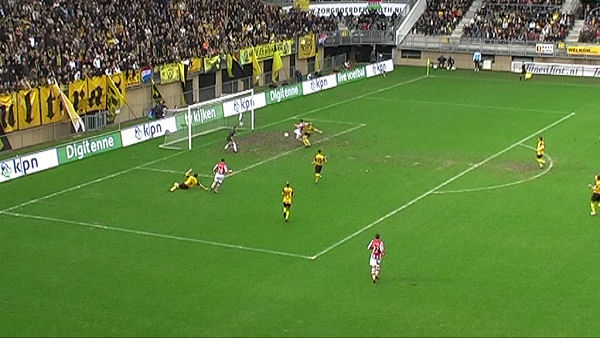
Lazovic maait vrij voor doel over de bal.
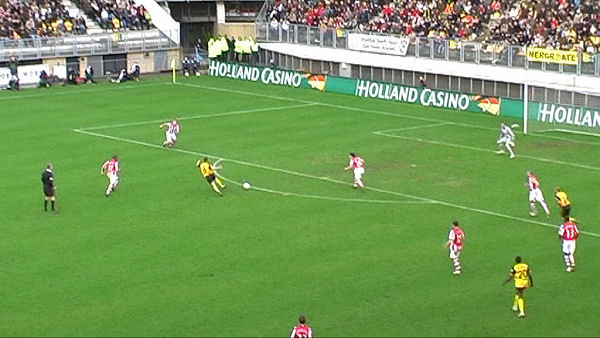
Roda is de bovenliggende partij maar werkt niet goed af zoals hier waar
Meeuwis in kansrijke positie
uitglijdt op het natgeregende veld.
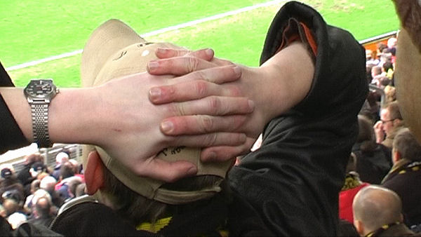
Precies koempel....
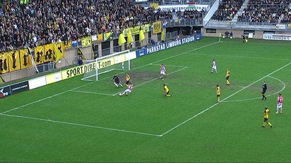
Hachelijk moment in de modderpoel voor het doel. Het leek erop dat de
(spaar)lampen zoals gewoonlijk
op zoek waren naar een overwinning met minimale inspanning.
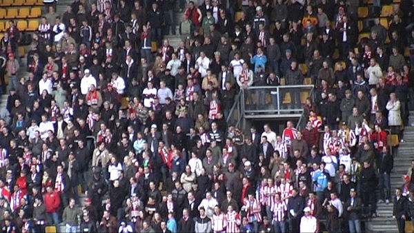
Feyenoord kan het, Ajax kan het maar PSV krijgt het vak niet vol.
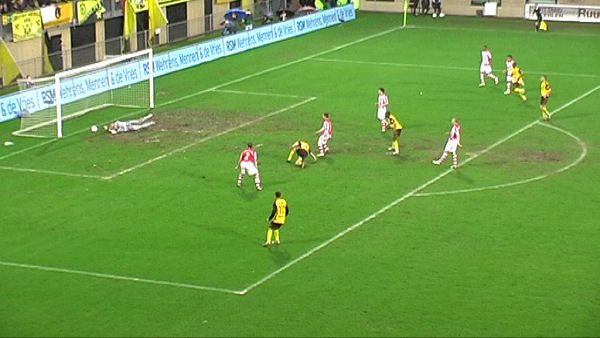
De sublieme Gomes houdt PSV overeind na een prachtig schot van Bodor.
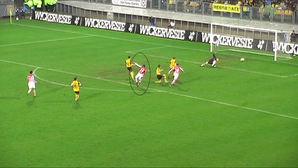
De Jong speelt de bal te slap op Saeijs waardoor Farfan de bal kan
onderscheppen en op weg kan gaan
naar het doel: 0-1: 67'.
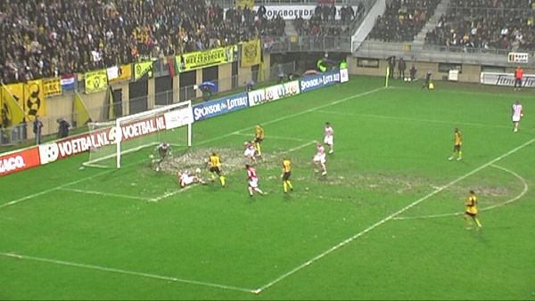
Ook in deze scrimmage ontsnapt PSV aan een tegentreffer.
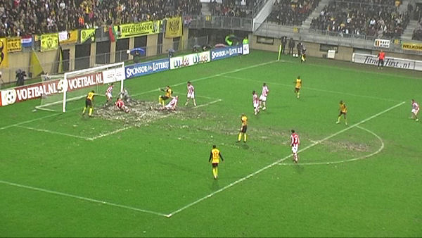
En het gaat maar door.
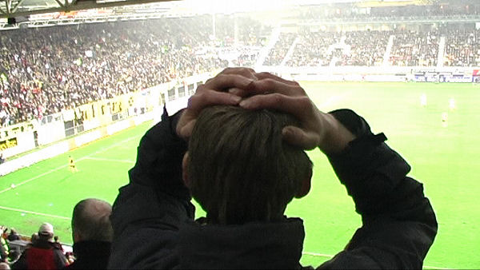
Precies koempel...
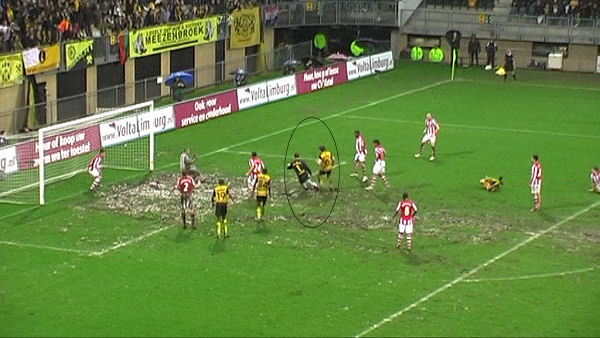
Het moment van gerechtigheid. De in de extra tijd mee naar voren gekomen
Castro maait over de bal
waarna Meeuwis er meteen bij is om de gelijkmaker in te schieten: 1-1,
(93').
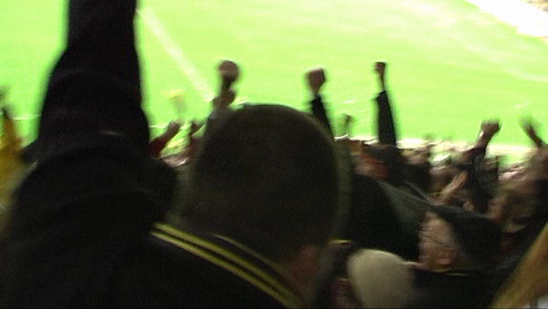
PLS ontploft....!
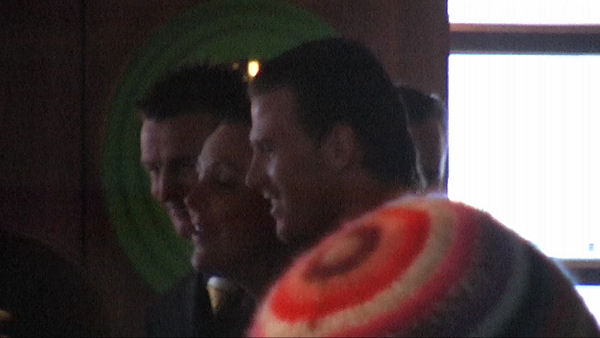
De Fauw, Van Tornhout en Lachambre bezochten de Kickoff.
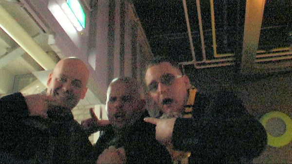
We adopteerden ook nog een PSV-supporter.
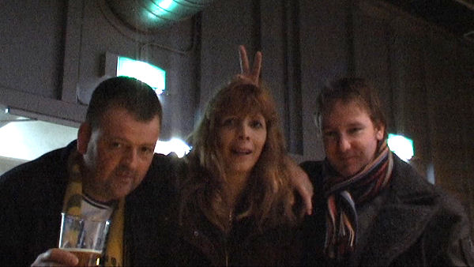
Bijna Pasen...
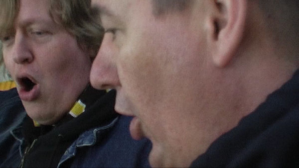
"Deze snaken zingen met het oog op de bekerwedstrijd alvast het volgende
onwelvoeglijke liedje:
"Haverkort is een homo!" Zijn deze schelmen nog te redden voor de
parochie?